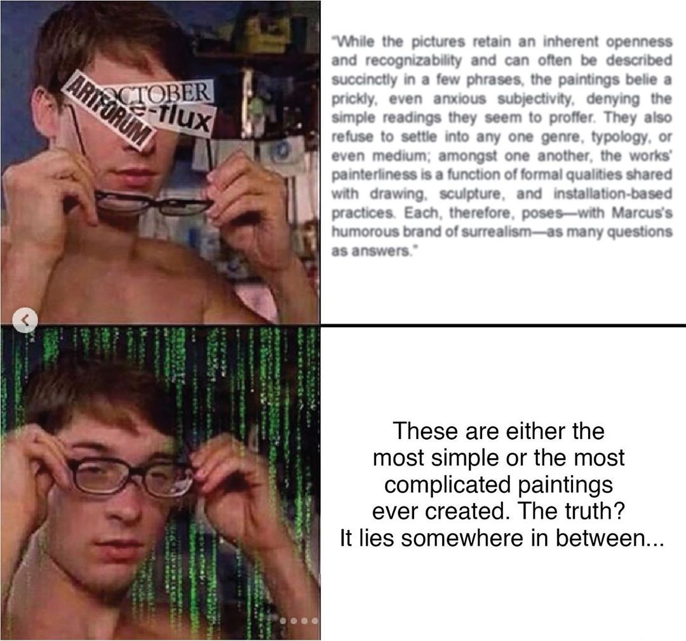

archive stuff, and keep track of things.
Back to Blog | Gary-Martin
Brad Troemel and Artspeak |
|---|
|
Brad Troemel is an artist and writer, once dubbed the troll of internet art. His position has often been outré, at the edges of major galleries and glossy monthlies. He first gained a following as a founder of the Jogging, a well known Tumblr site, and later shifted his very online output to platforms like Etsy and Squarespace to sell kits for on-demand artworks (things like tacos fastened shut with padlocks). His current focus on the square JPEG on Instagram picks up on what he advocated in earlier essays, such as 2013’s “Athletic Aesthetics”. His shitposting about art critics and white galleries is part of a sincere attempt to forge a new sort of relationship to art and its infrastructure, beyond a stratifying gallery system that makes a direct connection to an audience on social media. Troemel’s memes continually ask broad questions like: Why make art? Why make objects? How is art valued, who values it, and why? But his rawest criticisms are reserved for the economics of art. His posts skewer the people and institutions who pretend that artist, critic, and curator are somehow viable upwardly mobile professions. (As he rightly observes, you can’t pay rent with “exposure.”) Troemel is honest about where his revenue comes from: Patreon, a crowdfunding platform for creatives to receive small monthly donations from individual “patrons,” often in return for exclusive content. Troemel has embraced a system of compensation and feedback to match his digitally mass-distributed forms of art. In exchange for a few dollars a month, he offers short video lectures and half-hour studio visits via Skype. This approach seems to have effectively narrowed the gap between the artist and his public. I started following this account right at the time I was thinking about how to talk about my project and present it publicly. Posts like this were a great reminder to consider my audience when presenting my project, and keep descriptions simple and accessible.  |